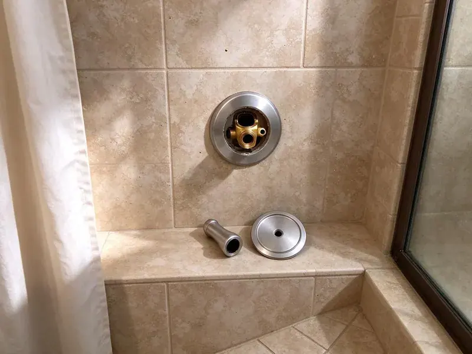

Urinal Installation in Euclid, OH
Need urinals installed in Euclid, OH? HRL Plumbing handles the carrier, the fixture and the flush valve in one job.
- Flat Written Price
- After-Hours Work
- Waterless Urinal Installs
- Licensed Ohio plumbers
Get Your Urinals Installed in Euclid, OH
Send the fixture count and layout, and you will get a written price.
Setting Urinals the Right Way in Euclid, OH
Home urinals are more common than people expect. Garage bathrooms and basement bars get them most, and the plumbing is the same as commercial work on a smaller scale, with a 2 inch drain, a vent and a compact flush valve. Water use stays low. Sensor valves are an option.
Our expertise includes:
- Install waterless urinals with cartridge housings
- Fit sensor flush valves, hardwired or battery
- Install Sloan and Zurn flush valves

Additional Bathroom Plumbing Services in Euclid, OH
From toilets to showers, our bathroom plumbing team in Euclid, OH handles repairs, installs, and upgrades with tidy, code-compliant work.


Customers
Why Choose HRL Plumbing for Urinal Installation in Euclid, OH?
Water savings pay for the upgrade. Swapping a 1.5 gallon urinal for a 0.125 gallon model in a restroom that sees a few hundred flushes a day saves tens of thousands of gallons a year, and the flushometer swap alone often pays back fast. We can estimate your savings.
- Cleanliness, A level bowl and a seated gasket keep splash and odor down.
- Water Savings, Waterless and low-flow options for heavy-traffic restrooms.
- Durability, Floor-mounted carriers hold the fixture solid for years.
Citywide Coverage
Same-week urinal installs are common here. Swaps on existing carriers usually happen within days, and new installs follow the permit timeline. You get updates along the way.
Experienced Team
Clear communication keeps jobs moving. Your plumber walks you or your contractor through the layout, confirms fixture models and heights before ordering, and calls if anything in the wall does not match the drawings. Nothing gets assumed.
Safety-First Approach
Water off comes first. The control stop or branch valve gets closed and bled before we loosen a single fitting. We never work on live lines.
Trusted Certified Euclid Plumbing Services Professionals
At HRL Plumbing, we take pride in licensed, certified plumbing services throughout Euclid, OH. Those papers on the wall mean something. Every repair, install and maintenance visit follows strict safety and quality rules, and the plumbers doing the work carry recognized industry credentials.
Call Us Now PHCC Plumbing Contractor Recognition
PHCC Plumbing Contractor Recognition Better Business Bureau (BBB) Accreditation
Better Business Bureau (BBB) Accreditation Angi Certified Pro
Angi Certified Pro ISO 9001 Quality Management Certification
ISO 9001 Quality Management CertificationFrom Carrier to Flush Valve in Euclid, OH
Waterless Urinal Upgrades in Euclid
Switching to waterless is mostly a fixture swap. We remove the flush valve, cap the supply and set the waterless bowl on the same carrier. Some codes want the supply left in place. That allows a future change back.

Home Gym and Garage Urinals in Euclid, OH
A garage urinal saves tracking dirt into the house. We run the drain to the nearest stack or building drain, add a vent or an air admittance valve where local code allows one, and pick a compact bowl that fits the space without a full commercial carrier. Freeze protection matters in garages. Ask us about the layout.
Commercial Urinal Installation in Euclid
Offices and restaurants want urinals that survive heavy use. Each unit goes on a carrier with new gaskets and stainless bolts, paired with a matched Sloan or Zurn valve. We check partition spacing too. Most codes want 15 inches from centerline to the side.
Urinal Permits and Compliance in Euclid, OH
New urinals usually need a permit. New fixtures mean rough-in and final inspections, and commercial jobs often need plans. Permits are on us. Like-for-like swaps may not need one.
Urinal Replacement and Upgrades in Euclid
Cracked or stained urinals are worth replacing. Cracked china leaks eventually and heavy scale rarely comes clean, so a new bowl on the old carrier is usually best. Carrier bolts get inspected first. Rusted bolts get replaced.
ADA Urinal Installation in Euclid
Accessible urinals start at the carrier. The carrier gets set for a 17 inch rim, the floor space stays clear, and the flush control stays reachable. We measure the rim twice. Inspectors measure too.
Residential Urinal Installation in Euclid, OH
Basement and garage bathrooms are where most home urinals go. A 2 inch drain, a vent tie-in and a supply sized to the valve go in, with blocking or a compact carrier. Ultra-low-flow models are popular. That barely touches the water bill.

ADA-Compliant Urinal Installation in Euclid
At least one urinal in a public restroom with more than one usually has to be accessible. ADA units need a rim at or below 17 inches, a 13-1/2 inch projection and 30 by 48 inches of clear floor. Flush controls must be reachable. We mark it all during rough-in.
Nearby Urinal Installers Near Me in Euclid, OH
Searching urinal installation near me usually means a restroom is down or a build-out is behind. Our crews do commercial work around town every week, so we can usually get a plumber on site within a day to look at the space and price it. You get a written quote.
Local supply houses matter on urinal jobs. We know which nearby counters stock Sloan valves and Zurn carriers, so a missing part means a short drive instead of a week of waiting on a freight delivery. Schedules hold that way.
HRL Plumbing at a Glance
- Licensed and insured plumbers serving Euclid, OH
- Same-day appointments and 24/7 emergency response
- Upfront, flat-rate pricing before work begins
- 4.9-star rated by 673+ Ohio customers
Euclid Map
Euclid Information
- Population
- 48,212
- Area codes
- 216/440/330
- Service area
- Euclid and towns within a 40 mile drive
- Nearby
- Cleveland, Mentor, Lakewood, Parma
Private wells serve many rural homes, and iron, sulfur and hardness are common issues that call for filtration or softening. A urinal in Euclid, OH drains cleanly for years when the slope and venting are right, and a tuned flush valve keeps the bowl rinsed.
Expert Services
Reach out to HRL Plumbing for honest, reliable plumbing from people who know the trade in Euclid, OH.
Our Specialized Plumbing Services in Euclid, OH
At HRL Plumbing, you get every kind of plumbing service from one company across Euclid, OH. We go from leak detection all the way to full system installations, for homes and commercial buildings, and we do it quickly at a fair price. Explore our core services below:


Our Urinal Installation Process in Euclid, OH
No surprises on restroom jobs. This is how it works.
Request a Quote
Call (740) 449-7505 with your restroom layout. We schedule a site visit.
Site Assessment
A plumber looks at the wall, drain and supply and gives you a written price.
Installation
We set the carrier if needed, mount the fixture and connect the flush valve.
Frequently Asked Questions About Urinal Installation in Euclid
Plan on $400 to $1,200 for typical jobs. The fixture type and how much rough-in work it needs drive the price, and specialized units or long pipe runs through finished walls add to it. That covers labor and standard materials.
They can be, with the right maintenance. Waterless urinals save the most water of any option, but they need cartridges replaced on schedule and a drain line with good slope, and a restroom without reliable custodial care is better served by a 0.125 gallon flush model. We can talk through both.
Our labor is warrantied in writing. Leaks or loose fixtures from our work get fixed free, and makers warranty the china and valve. The invoice lists the terms.
In most cities, for new installs. A replacement on the same lines may count as repair, but anything that adds a fixture or moves a drain is new work that needs a permit and an inspection before the restroom opens. Rules vary by city.
Daily cleaning and a periodic check of the flush. Flush units need an annual valve check, and waterless units need cartridge changes and gentle cleaners. Custodians get a quick lesson.
Flushing action. Washdown units rinse from the rim and drain by gravity, and siphon jet units pull the trap clear with more water. Most new models are washdown.
Two layers of coverage. Our written labor warranty covers leaks and loose mounting from our work, and the fixture and flush valve makers cover defects in their own products, often for several years. Keep your paperwork.
Yes, we install them regularly. We set the fixture on a carrier, tie the outlet into a properly sloped drain, and in many cases cap a water supply behind the wall so the restroom can convert back to a flush model later if needed. Cartridges come with the install.
Hear From Customers Who Hired Our Plumbing Experts

Brian W.
I smelled gas behind the dryer and called right away. The plumber found a corroded flex connector, replaced it, and pressure tested the whole line before turning the gas back on. He let me watch the gauge hold steady for fifteen minutes.
Gas Line Repair · Mentor, OH
Sofia M.
Two new toilets went in during one visit. The tech set them on new wax rings and swapped the old supply lines. He also noticed our bathroom faucet dripping and replaced the cartridge while he was there. No mess left behind.
Toilet Installation · Cleveland, OHMark T.
The floor drain in our office break room backed up every few weeks. The plumber ran a cable, then put a camera down and found roots at a joint about thirty feet out. Seeing it on the screen made the decision easy.
Drain Cleaning · Mentor, OH
James P.
Our restaurant had a slow leak at the hand sink that was rotting the cabinet base. HRL Plumbing came in at six in the morning before prep, replaced the trap and both supply lines, and was packed up before my first cook clocked in.
Commercial Plumbing · Lakewood, OHPaul B.
Our pit pump ran nonstop even in dry weather. The plumber found the check valve was stuck open, so the same water kept cycling back into the pit. New valve, new float switch, done in an hour. It runs quiet now.
Sump Pump · Cuyahoga Falls, OH
Angela D.
Our sump pump quit during a storm and the water was an inch from the basement carpet. HRL Plumbing put in a new pump with a battery backup that same evening. We have had two heavy rains since. It kicked on both times.
Sump Pump · Euclid, OH